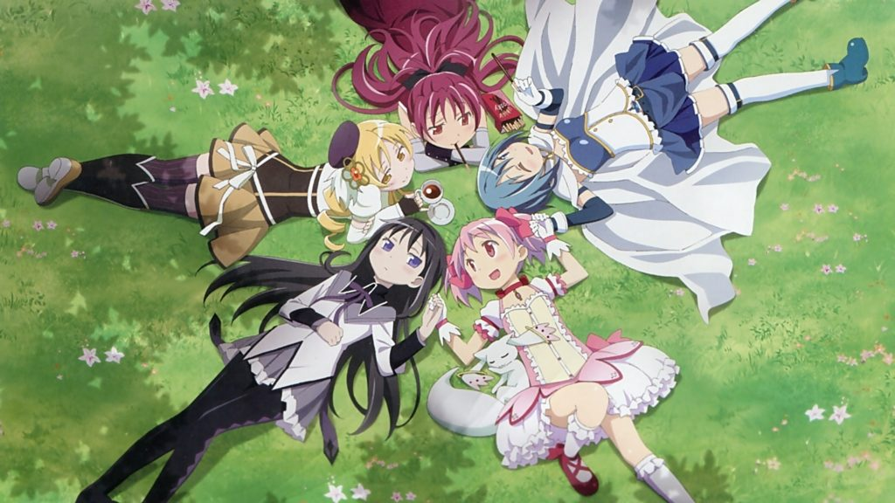

<DOCTYPE html>
<html lang = "ja">
<head>
<meta charset="utf-8">
<meta name=”viewport” content=”width=device-width,initial-scale=1.0″>
<title>魔法少女まどか☆マギカ</title>
<link rel="stylesheet" href="madoka.CSS">
<style>


</style>
</head>
<body>

<h1 align="center">あらすじ</h1> 
<br><h2  align="center"> 
<br>鹿目まどかが巨大な怪物に破壊された市街地で傷つきながら戦う少女暁美ほむらを目撃し、
<br>白い動物のような生き物キュゥべえから「僕と契約して、魔法少女になってよ」と告げられる夢を見る。
<br>そのすぐ後にほむらはまどかと同じクラスの転校生として現れ、ほむらはまどかに
<br>「魔法少女になってはならない」と警告を行う。そしてまどかと友人の美樹さやかが
<br>魔女の結界に迷い込み、2人はそこで魔法少女の巴マミと出会う。</br>


</body>

</html>